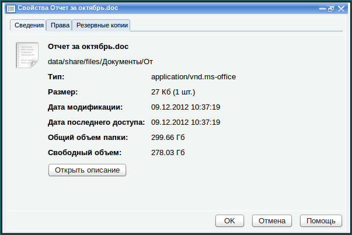

Организация аналитического хранилища
Бизнес-сервер
Бизнес-сервер предоставляет
среду, позволяющую работать со структурами данных произвольной природы.
Он позволяет хранить эти структуры в индексированной базе данных,
классифицировать данные по любому количеству произвольных признаков,
осуществлять быстрый поиск этих структур и связывать их между собой.
Кроме того, бизнес-сервер позволяет заставить эти структуры "работать",
то есть выполнять определенные задачи. Следовательно ресурсами
бизнес-сервера могут пользоваться различные бизнес-приложения с тем,
чтобы хранить в нем информацию о реальных объектах бизнеса, таких как
"клиенты", "заказы", "проекты" и "задачи". Возможности бизнес-сервера
полезны и для обычного файлового сервера. В базе данных можно хранить
дополнительную информацию о файлах, пользователях, компьютерах и сетях.
Для этой цели предназначена структура "Информационная карточка
объекта". Можно привязать информационную карточку к любому объекту
панели управления или к любому файлу, хранящемуся в общей папке
сервера, а затем связать эти информационные карточки между собой.
Модуль "Бизнес-сервер" не входит в базовую поставку контроллера или
файлового сервера. Он идет в комплекте с любым бизнес-приложением,
таким как "ЛВА Управление". Также, можно заказать модуль
"Бизнес-сервер" отдельно, без бизнес-приложений. Таким образом вы
получите некий каркас, позволяющий создавать информационные карточки
без привязки к какой-либо предметной области. Информационную карточку
можно привязать к любому объекту системы управления, а также, к любому
файлу, который хранится в общей папке сервера.
Для выполнения действий, описанных далее нужно установить
"Бизнес-сервер" и настроить его интеграцию с системой управления. О
настройке интеграции с бизнес-сервером написано в разделе "Интеграция с
другими серверами".
Создание информационных карточек
После установки и интеграции с бизнес-сервером, можно создавать
информационные карточки для следующих объектов
- Файлы
- Подсети
- Хосты
- Пользователи
- Группы пользователей
- Группы объектов
В каждой информационной карточке можно подробно описать каждый объект,
связать его с другими объектами, структурировать его, то есть,
привязать к нему определенное количество информационных полей.
Получение доступа к информационной карточке объекта
Чтобы получить доступ к информационной карточке любого объекта панели
управления, нужно открыть его и нажать кнопку "Открыть описание". На
следующем скриншоте изображено окно свойств пользователя с кнопкой
"Открыть описание":
При нажатии кнопки "Открыть описание" откроется информационная карточка
данного объекта. Если для данного объекта еще не заведено
информационной карточки, откроется окно пустой информационной карточки,
которое позволит создать информационную карточку для этого объекта.
В информационной карточке можно указать "Наименование", а также,
произвольное описание объекта. Можно при необходимости оформить это
описание с помощью встроенного текстового редактора. После нажатия на
кнопку "Сохранить", информационная карточка объекта будет создана и
можно будет продолжить работать с ней дальше. О возможностях
информационных карточек описано в разделе "Работа с информационной
карточкой".
Получение доступа к информационной карточке файла
Открыть информационную карточку файла можно с помощью файлового
менеджера. Можно открыть информационную карточку файла с помощью
файлового менеджера, встроенного в панель управления, а также, с
помощью обычного файлового менеджера операционной системы. Для второго
способа необходимо установить в операционную систему дополнительный
модуль.
С помощью панели управления
Откройте раздел "Файловый сервер" --> "Файловый менеджер", найдите в нем нужную папку или файл и откройте окно его свойств.

Нажмите кнопку "Открыть описание" и откроется информационная карточка
данного файла. Если информационной карточки для этого файла нет,
откроется окно с пустой информационной карточкой и с его помощью можно
будет эту информационную карточку создать.
С помощью файлового менеджера
Также можно открыть информационную карточку файла с помощью файлового
менеджера, встроенного в операционную систему. Для этого нужно войти на
сервер, в его общую папку, найти файл, нажать правой кнопкой мыши на
нем и выполнить команду "Информация о файле" из контекстного меню. В
результате выполнения этой команды откроется окно браузера и внутри
него информационная карточка данного файла. Чтобы в контекстном меню
появилась команда "Информация о файле", необходимо инсталлировать в
операционную систему скрипт, добавляющий команду в контекстное меню. В
комплекте с сервером поставляются скрипты для разных операционных
систем: Linux, MacOS и Windows. Все они находятся в общей папке utils,
в подкаталоге fileinfo. В нем есть подкаталоги Linux, MacOS и
Windows, в каждом из них находится файл со скриптом "Информация о
файле". Этот файл необходимо инсталлировать в операционную систему.
Выполняется это так же, как установка скрипта интеграции файлового
менеджера с подсистемой сетевого копирования, которая была описана в
разделе "Интеграция Web-интерфейса с операционной системой".
Используйте инструкцию из этого раздела для установки скрипта
"Информация о файле". Нужно выполнить такие же точно действия, только с
файлами, находящимися в подкаталоге fileinfo общей папки utils.
После инсталляции можно выполнять команду "Информация о файле" внутри
любой общей папки сервера и в результате будет появляться окно браузера
с информационной карточкой этого файла.
Информационная карточка привязана к файлу по пути к этому файлу,
который указан в поле "Файл". Далее можно указать в поле "Наименование"
краткую характеристику этого файла, а в поле "Описание" любую
информацию о файле в любом объеме. После заполнения этих полей нажмите
кнопку "Сохранить" и информационная карточка файла будет создана. Далее
можно будет продолжить работать с ней, добавляя дополнительную
информацию.
Работа с информационными карточками
После создания, информационная
карточка попадает в справочник информационных карточек своего вида.
Чтобы увидеть все доступные в системе справочники информационных
карточек, разверните раздел "Система" --> "Основные параметры"
--> "Интеграция" --> "Бизнес-сервер".
Соответственно, при регистрации информационной карточки для файла, она попадает в справочник информационных карточек "Файлы". При регистрации информационной карточки пользователя, она попадает в справочник информационных карточек "Пользователи"
и т. д. Чтобы отобразить список всех информационных карточек,
зарегистрированных в системе, нужно открыть соответствующий справочник.
Рассмотрим работу со справочниками информационных карточек на примере справочника "Файлы". Все остальные справочники аналогичны.
Работа со справочником "Файлы"
Справочник файлов отображает все
файлы, зарегистрированные на бизнес-сервере. Однако технически
правильнее сказать, что он отображает список всех информационных
карточек файлов, хранящихся в базе данных бизнес-сервера. Сам список
можно по разному отсортировать, нажимая по заголовкам колонок, можно
открыть любую карточку, сделав двойной щелчок по ее названию в колонке
"Описание" или выделить строку с файлом и нажав кнопку . Можно открыть
сам файл, щелкнув по его названию в колонке "Имя файла". Также, с
карточками можно выполнять различные действия с использованием панели
кнопок, которая расположена над списком.
Работа с группами справочника
Если файлов зарегистрировано очень
много, можно для удобства разложить их по группам. Нужно предварительно
создать группы, а затем в каждой карточке указать, к какой группе она
относится.
Чтобы создать группу, нужно нажать кнопку

. Откроется окно, в котором нужно указать название группы и нажать
кнопку "Сохранить". Таким образом можно создать группы и затем разнести
файлы по группам.
Вот, например, как может выглядеть справочник файлов, в котором созданы группы
Чтобы поместить информационную
карточку файла в группу, нужно открыть эту информационную карточку и
указать группу, в которую он должен входить, выбрав ее из
раскрывающегося списка в поле "Группа", как показано на следующем
скриншоте:
После нажатия на кнопку "Сохранить",
карточка файла будет перемещена в указанную группу. Так же точно можно
помещать группу внутрь другой группы, создавая иерархии неограниченной
вложенности.
Чтобы увидеть в списке содержимое группы, нужно ее открыть. Это можно сделать двумя способами.
1. Открыть раскрывающийся список над таблицей и выбрать группу из дерева групп:
После выбора группы, таблица будет
отображать только ее содержимое, а название группы будет указано в
раскрывающемся списке над таблицей. На следующем скриншоте показан
справочник файлов, показывающий содержимое группы "Сертификация".
Чтобы вернуться наверх, нужно снова разернуть список групп и нажать на самый верхний узел дерева (узел "Файл").
2. Можно открыть группу и отобразить ее содержимое, просто нажав на значок группы в списке .
В этом случае под строкой с группой отобразиться вложенная таблица с
содержимым группы. Это такой же точно справочник, но отображающий
только содержимое выбранной группы. На следующем скриншоте показана
группа "Книги" в открытом состоянии.
Мы видим внутри группы "Книги"
вложенную таблицу, в которой отображено содержимое этой группы. С ее
помощью можно добавлять в группу новые файлы и выполнять с ее
содержимым любые действия, такие же, как и в таблице верхнего уровня.
Группировка файлов это удобная
функция, однако иногда может потребоваться увидеть список файлов
полностью, без разбивки по группам. Этого можно добиться, нажав кнопку

.
При ее нажатии справочник перейдет в режим "Без иерархии" и отобразит
список файлов, без групп. Чтобы вернуться к иерархическому просмотру,
нужно снова нажать эту кнопку.